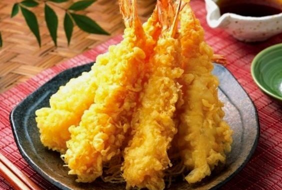

Shrimp Tempura

After a nice crunch, soft meat on the inside. A big juicy shrimp is the best snack.
Ingredients
- 8 Black Tiger Shrimps
- 1 egg
- A bit of salad oil
- Reasonable amount of flower
- Reasonable amount of Japanese bread crumbs
-
A
- 1/2 cup of mayonnaise
- 1/2 tablespoon of noodle soup base
- 1/2 tablespoon of cream
- A bit of black pepper
- 2 chives
- 1 lemon
- A reasonable amount of chervils
- A reasonable of frying oil
Instructions
- Peel the shells of the shrimps and wash them rinse them lightly in water. Pat them down in paper towel to dry them.
- Cut the tails so that the shape diagonally.
- With the shrimp belly side up, make deep cuts where the legs were, about 4-5 times.
- With your thumbs on the back of the shrimp, push on the back until you hear a pop. Then straighten the shrimp out. This shape makes it fry better.
- Take the mayonnaise, noodle soup base, cream, black pepper, and diced chives and mix them well in a bowl.
- In a bowl, beeat the egg and mix in the salad oil.
- Dip the shrimp in the egg mixture and ensure it's spread out evenly among the shrimp. Use your hand to remove any excess
- Roll the shrimp in the bread crumbs and ensure it's spread evenly among the shrimp. The tail does not need bread crumbs
- Fill the pan with 2-3cm deep of oil and fry at a temperature of 170 degrees. Let fry until golden brown.
- Flip the shrimp over and fry until golden brown again. Place on a dish with a piece of lemon and pieces of chervils.